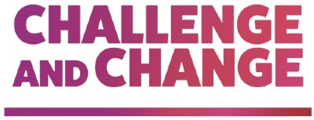

We actively seek out a small number of diverse organisations each year and provide unrestricted grants. We have invested over £4,000,000 since 2011.
Connections
Through the ZING Forum and broader network we connect our partners with a wide range of expertise, other funders and other collaborative youth-oriented organisations.
Technology
ZING provides digital technology advice and select services to our partners, the broader youth charity network, and funders.
Our Partners
We currently focus on early stage organisations who have a sustainable and collaborative approach to working with young people in their transition between education and the workplace.
They are innovative in their income generation, keep overheads in check, and rigorously measure their outcomes.
Peace First
Community of changemakers
The Difference
Supporting teachers of vulnerable learners
Roots
Understanding our differences
Get Further
Attaining gateway English & Maths qualifications
The Key
Inspiring belief in young people
Lighthouse
Stable children's homes
Young Trustees Movement
Championing young trusteeship
Really NEET
Making education accessible to vulnerable young people
Fair Education Alliance
A coalition to end educational inequality
Learning with Parents
Every child supported at home
SHiFT
Doing whatever it takes to break destructive cycles
Unloc
Developing young potential
Challenge and Change
Supporting young people affected by injustice, to make positive change
Alumni
About
Mission
To provide investment, connections and access to technology expertise to early stage youth impact organisations with a proven business model and with whom we find a strong connection.
Vision
To be a collaborative, powerful and positive force for good in helping young people realise their potential.
Collaboration
We strongly believe that solving systemic societal challenges for young people can only be achieved by building trusted relationships with our partners, fellow funders and network in the private and public sectors. These trusted friends include:
Yoti, ACF, NPC, Blagrave Trust, Dulverton Trust, and Catalyst/ CAST.
We understand that COVID-19 will have an impact on the charities we fund, those contacting us for support, and to civil society groups more generally. We have signed the Funder Statement of COVID-19, and are committed to being flexible and as helpful as possible during the coming weeks and months.
ZING supports the 360Giving open data initiative.
We believe that with better information, grantmakers can be more effective
and strategic decision-makers. 360Giving provides support for grantmakers to publish their grants
data openly, to understand their data, and to use the data to create online tools that make grant-making
more effective. For more information, visit 360Giving.
You can find a list of our grants here (GrantNav), and our 360Giving Insights dashboard here.
Robin and Chris enter the world 11 days and 200 yards apart
May 2009
Robin and Chris combine forces to set up a Foundation and agree to 'buy' themselves 5 years worth of learning. Foundation is named ZING and registered with the Charity Commission
December 2010
First grants made to Greenhouse and WeSeeHope
December 2011
Inaugural ZING Partner Forum
January 2013
Not-for-profit Tech Consultancy, Unleashing Potential, is launched
December 2014
ZING celebrates its 5th birthday and £2,000,000 of investment
December 2015
Strategic Review undertaken and ZING transitions to early stage seed funding typically of collaborative and digital initiatives
June 2016
Time-bound Unleashing Potential closes its doors and ZING joins the third sector Digital Transformation 'movement'
May 2019
ZING celebrates its 10th birthday by formerly offering pro-bono digital services to our partners and youth charity network
April 2021
ZING reaches £4 million in investment since founding
Who we are
Robin Tombs
Founder
Chris White
Founder
Simon West
Digital Lead
Robin and Chris are lifelong friends. Having been to school, gone to youth group, travelled and shared a house together they often talked about 'giving back'. Robin's successful entrepreneurial career and Chris's learnings from working with several corporate foundations as part of his management consultancy career made this possible, so they combined forces in 2009 and created ZING. Both are passionate about creating opportunities for young people to achieve their potential in life and share a desire to bring scalable web and mobile technologies to the not-for-profit sector. So in 2011 Simon came on board as our CST "Chief Software Tinkerer" and has led the charge on all things non-profit tech since.
Contact Us
We do not run a grant application process and proactively seek out our partners, but we love to hear from early stage inspiring charities and social entrepreneurs. We do not fund individual local or community based organisations, and currently only fund initiatives based in the UK.
ZING Privacy notice
The ZING Foundation is committed to protecting your personal information and being transparent about the information we hold about you. This privacy notice will explain how our organisation uses the personal information we collect from you.
Topics:
What information do we collect?
How do we collect your information?
How will we use your information?
How do we store your information?
Marketing
What are your rights and choices?
Information required by EU privacy law
What are cookies?
How do we use cookies?
What type of cookies do we use?
How to manage your cookies
Privacy information on other websites
Changes to our privacy notice
How to contact us
What information do we collect?
We collect information in the following ways.
Information you give to us. This includes your name, email address, phone number, and any other personal data freely volunteered when you contact us via the website. If you contact us by phone or via social media, or meet with us in person, we will record your details to facilitate follow-up. If we request personal sensitive information (such as health information), this is to make reasonable adjustments to accommodate you (for example, for an event), otherwise we will be clear about the sensitive information we are collecting and why.
Information we collect through your use of our website. We collect information about how you interact with the content on our website, including whether you watch embedded content from third-party websites (for example, YouTube and Vimeo), and the links you click. We collect your IP address but we remove the last digits to protect your privacy. This means we only have region level information about your location. We also collect information about the device you use to browse the website, including browser type/version, and operating system.
How do we collect your information?
Most of the information we collect comes directly from you. We collect and process your information when you do the following.
Fill in and submit our website’s contact form.
Voluntarily complete a survey or provide feedback to us via phone or email.
Visit and use our website, through cookies and a tag manager (this controls the analytics data we collect).
Meet with us in person.
How will we use your information?
We collect your information so that we can:
follow up on requests for support;
notify you of relevant news and events;
with your permission, put you in touch with other organisations and companies in our network for support, collaboration and services;
give tailored support and guidance (for example, funding or technical); and
improve the website content and experience.
How do we store your information?
We are committed to storing your information securely. To prevent unauthorised access or disclosure, we have put in place physical and electronic measures to safeguard and secure it.
When we use other organisation’s services to support our work, we sometimes send and store the information we collect outside the European Economic Area (EEA), to carry out the activities described in “How will we use your information?”. The organisations we use who are outside the EEA either have the EU-US Privacy Shield certification, or we have standard EU model contract clauses in place.
Marketing
We will contact you with news and events if you are within our network, and have shared your contact details with us for the purpose of being contacted in this way. You can opt out of this communication at any time by replying and asking us to remove you from our mailing list, or contacting .
If you contact us through the website, we will not add you to any marketing lists you are not already a member of, unless we ask you separately - the purpose of the “contact us” form is solely to request our support.
What are your rights and choices?
The right to access – You have the right to request copies of your personal information.
The right to rectification – You have the right to request that we correct any information you believe is factually inaccurate, or complete any incomplete information.
The right to deletion – You have the right to request that we delete your personal data, under certain conditions.
The right to restrict processing – You have the right to request that we restrict the processing of your personal data, under certain conditions.
The right to object to processing – You have the right to object to our processing of your personal data, under certain conditions.
The right to data portability – You have the right to request that we provide back to you the personal information you have provided us, under certain conditions. This right also includes us sending that information directly to a third party if you request it, and if it is technically feasible.
If you make a request, we have one month to respond to you. If the request is significantly onerous, we have the right to take up to two months, and we will be upfront if this is the case. If you would like to make a rights request please contact us as follows.
Email:
Or write to us:
ZING c/o Yoti
5th Floor, Fountain House
130 Fenchurch Street
London
EC3M 5DJ
Information required by EU privacy law
As well as the other information in this privacy notice, EU privacy law requires us to provide the following extra information.
Lawful bases for processing
This refers to the reasons why we collect and use your personal information. We explain these above in plain English but in legal terms we collect and use your personal information using the following lawful bases.
Performance of a contract: to provide you with products, services and information you request or that are integral to our business.
Legitimate interests: for legitimate business purposes. To use this lawful basis we assess both our interests and yours, to make sure that what we’re doing does not cause any unjustified privacy intrusion.
Consent: for optional activities where you need to give us permission or opt in.
Legal obligation: to comply with legal obligations (for example, relating to equality law obligations, tax, customer due diligence and so on).
What are cookies?
Cookies are text files placed on your computer to collect standard internet log information and visitor behaviour information. When you visit our website, we will collect information from you automatically through cookies and similar technology.
We use cookies in a range of ways to improve your experience on our website, including the following.
Understanding how you use the website and embedded content.
For content delivery security.
We have also given permission for embedded video services like YouTube and Vimeo to set cookies on our site, so they can understand how you engage with the content they host. Where possible, we prevent their ability to set cookies and track your usage until you engage with the content.
What type of cookies do we use?
There are a number of different types of cookies, however, our website uses the following.
Functional - we use these cookies so that we can recognise you on our website, remember your previous visits, and the preferences you made. We use a mix of first-party and third-party cookies.
Advertising – we use these cookies to collect information about your visit to our website, the content you viewed, the links you followed and information about your browser, device, and part of your IP address (the last digits are removed). We sometimes share anonymous data with third parties for advertising purposes.
We use the following first-party cookies.
Cookie name
Purpose
cookieconsent_status
We use this cookie to record how you engaged with our website’s cookie banner, and control whether it appears on future visits.
_ga
This cookie records our Google Analytics account information, to control where analytics information is stored.
_gid
Google Analytics uses this cookie to distinguish between users, in the analytics information we collect.
The following third-party providers set cookies on our website.
Provider
Purpose
Their privacy and cookie policies
Cloudflare
To speed up the delivery of our website’s content to you, our host uses Cloudflare’s content delivery network. Cloudflare sets cookies to perform this securely (these are strictly necessary to function), and for their own analytics.
We use these Google Analytics cookies to collect information about how you interact with our website, including how you reached it, which content you interacted with and information about the device you used, including browser type/version and operating system. We collect your IP address but we remove the last digits to protect your privacy. This means we only have region level information about your location.
We use Google Tag Manager to manage the analytics tags we deploy. This controls the analytics information we collect, and removes the last digits of your IP address, restricting our visibility of your location to region level.
We use Hotjar analytics to collect anonymised information on how you use our website, including which areas of the site you engaged with. We cannot see who you are, and after processing, no IP addresses are stored.
Some of our partners host videos on the online video hosting site Vimeo. We use the embedded Vimeo player to display this content, which sets cookies to check whether certain features or preferences have been selected, and collect analytics information (e.g. whether a video has been played).
Some of our partners host videos on the video host YouTube. We use their embedded video player to display this content, which sets cookies to record preferences, watch history, and collect analytics information. We have enabled YouTube’s privacy enhanced mode to restrict their collection of data, until you interact with this video content.
You can set your browser to not accept cookies. However, in a few cases, some of our website features may not function as a result. To learn more, visit cookiesandyou.com.
Privacy notices on other websites
The ZING website contains links to other websites, including our partners. Our privacy notice applies only to our website, so if you click on a link to another website, you should read their privacy information.
Changes to our privacy policy
We keep our privacy notice under regular review and place any updates on this web page. This privacy notice was last updated on 18 June 2019.
How to contact us
If you have any questions about our privacy policy, the information we hold on you, or you would like to make a rights request, please contact us.
Email:
Or write to us:
ZING c/o Yoti
5th Floor, Fountain House
130 Fenchurch Street
London
EC3M 5DJ
Peace First
Peace First unleashes the creativity of millions of young people to feed the good in themselves and the world.
We know the problems we are up against and the cost of inaction. We also know the solution: connected, committed, and engaged young people, all of whom are powerful examples of courage, compassion, and collaborative leadership.
Our digital platform for social innovation, the Peace First Challenge, invites young people (13 – 25) from across the globe to identify a critical issue in their community and then provides all the support structures to ensure their success:
Project design tools
Caring adult mentors
Small start-up grants
Community of peers
From here, young people are free to imagine and implement compassionate solutions to our globe’s most urgent problems.
"Zing have been essential to our early success in the UK. They took a big risk in supporting us at the beginning of our UK Journey - enabling us to pilot our programme here. They provided the perfect mix of support, advice and encouragement with the trust and flexibility we needed to make best use of our strengths."- Tom Barratt, VP UK Initiatives
The Difference
Raising the status and expertise of those educating the most vulnerable learners
Every day, 41 of the country’s most vulnerable children are permanently excluded from school, and once excluded, only 1.5% of children will get a good pass in English and maths GCSEs. Nationally, 1 in 200 children is excluded from school, but 1 in 2 of the prison population was excluded when at school.
The Difference works to raise the status and expertise of those working with vulnerable learners: in Alternative Provision, and in mainstream. We identify exceptional teachers and match them to leadership positions in schools for excluded pupils. Over a two year placement, The Difference provides a specialist training programme for our Difference Leaders alongside their two-year leadership post. Our Difference Leaders gain specialist knowledge of national best practice in working with disengaged and vulnerable children, including in improving literacy rates and positive post-16 destinations, and improved support for mental health, safeguarding and effective multi-agency working.
The Difference’s relationships with mainstream schools, including some of the biggest multi-academy trusts in the country, then allow us to broker a new career step for our Difference Leaders at the end of the two-year training programme. In this way, The Difference will cascade best practice in working preventatively, positioning its alumni to build capacity in mainstream schools to support vulnerable children before they are excluded.
The Roots Programme
Bringing people with different life experiences together to increase compassion, empathy and understanding.
The Roots Programme is a radical new initiative that believes our society benefits if we bring together people with hugely different lives in an authentic and meaningful way. We take people from different walks of life and have them meet and eat, talk and debate matters that affect us all. We will unite them and build understanding around their differences and, importantly, their similarities.
To have a real impact, we need to do this for now and for the future. On the one hand, we work with people in positions of influence in our major institutions and leaders in the communities affected by their decisions. On the other, we work with state and private schools to have the creative, engaged future influencers of our country build bridges across socio-economic divides.
The programme is designed to do this within a supportive environment, harnessing the desire of those on all sides to seek insight, enlightenment and meaningful change – to show their roots and find out about those of others. The Roots Programme is there to facilitate workshops with all parties to lay the groundwork and ensure that there is meaningful change after the programme for the participants and their respective communities.
Get Further
Matching students facing challenges in further education with a first-rate tutor, to boost their English or maths skills and help them gain these key qualifications
Every year, around 200,000 children don’t achieve the expected standard in GCSE English and maths - these children are disproportionately from disadvantaged backgrounds.
The impact of this lasts a lifetime. Missing out on a grade C in GCSE English by one mark increases a young person’s chances of not being in education by 18 by a third. Without these gateway qualifications, as adults they can struggle to secure and stay-in employment or progress in the world of work.
Get Further supports students facing challenges in further education to improve their English and maths skills and gain key qualifications, so that they can realise their aspirations for education and work. We match students to a high-quality tutor – at no cost to the student – supported by a bespoke post-16 English and maths curriculum and resources that draw on the latest evidence in cognitive science to help students build their knowledge and confidence ahead of their exams. We also provide year-long, rounded support to students for independent study and strategies to boost motivation and help keep them on track.
The Key
The Key exists to inspire belief in young people
The Key wants to create a world where all young people are inspired to believe in themselves and achieve their potential. Their mission is to enable young people to believe in their ideas, and take responsibility for living them, by discovering what they’re capable of and generating the drive and determination to do something meaningful with it. Their ultimate impact goal is to inspire and support young people facing challenging circumstances to develop growth mindsets and tackle social immobility in their own unique way.
The Key provides young people with the tools and opportunities to put their ideas into practice by facilitating young people’s participation in their tried and tested youth-led, skills development Framework. It is simple but effective and sees young people come together in little teams and, with the support of their Key Facilitator (youth worker trained to deliver the framework), think, plan, budget, pitch (to panel), do and review their very own youth-led projects. All they ask is for young people to engage their individuality, curiosity and creativity as they dream up their projects and work together to make it happen for real.
Lighthouse
Lighthouse children's homes combine a strong education ethos, a stable home and excellent therapeutic support from outstanding professionals
Every year we see that the outcomes for children in children’s homes are poor and not improving. 62% have a diagnosable mental health condition, 61% are in alternative provision and 17% are subject to a conviction, final warning or reprimand while in a children’s home.
At Lighthouse we believe that education is fundamental to breaking this link between demography and destiny. We place a strong emphasis on education and we take a keen interest in our children's educational progress.
At the heart of our approach is our people. We work to recruit and train talented graduates and experienced residential care workers to support the most vulnerable young people. We use a model of practice known as social pedagogy which is the model in place in most of Western Europe. We believe that our approach will lead to more stable placements, happier children and ultimately, better life outcomes.
Children growing up in residential care can go on to live full and fulfilling lives if they have the right support. With excellent people, a stable place that feels like home and shared values and principles underpinning our work - all applied with a personal and caring approach - we believe that we can help young people to thrive, access opportunities and transform children's residential care in the UK.
Young Trustees Movement
A movement mobilising to double the number of young trustees on boards by 2024
When one in 12 trustees are named either John or David, and the average age of a trustee is over 60 (3% are under 30) – it’s no secret that board diversity is an issue. This lack of representation and inclusivity on boards is a choice. It hampers board effectiveness, diversity of thought and future-proofing.
We are building a movement of young people, charity leaders and employers taking holistic action to:
Double the number of trustees aged 30 and under on charity boards by 2024 (while the spotlight is on the age factor, our movement is part of a wider call for diversity on boards).
Create a norm of Boards embarking on a journey of change and realising that this also benefits all board members.
Change the image of what a trustee looks like, by shining a light on the impact made by young trustees.
Define what conditions allow for safe spaces where all young people can genuinely add their perspective.
Meaningfully empower organisations/existing initiatives working in this space.
Making education accessible to vulnerable young people aged between 16-24 years of age who have struggled to cope in mainstream education
The Really NEET Project was founded to meet the unique needs of NEET young people (aged 16-24) to learn in a supportive and specially tailored environment. Their projects are about much more than simply getting a job or passing a course; they hope to empower positive change in young people by giving them the tools to create stability and security in their lives that will enable them to achieve their future goals and become contributing members of wider society.
They are an Award-winning South Yorkshire based Social Enterprise, working with some of society’s most vulnerable young people. Their founder, Sophie Maxwell, set up the project due to her own life experiences (dropping out of school, domestic violence and homelessness), leading to her to set up a college for young people who had been through similar circumstances, ensuring they had the right kind of support in place at such a crucial age, and enabling them to achieve their dreams despite their challenges.
Really NEET’s 37 week "Inspiring Change" programme supports disadvantaged youth through: Maths and English, highly practical vocational qualifications, Personal Social Development sessions, employability sessions, home-pickups, enrichment activities, a leadership residential, and quality onsite youth work.
Fair Education Alliance
The Fair Education Alliance is working towards a world where our education system is fair – where no child’s educational success is limited by their socio-economic background.
The Fair Education Alliance is a coalition of over 100 of the UK’s leading organisations from business, the third sector and education. Together, they work toward a world where disadvantage no longer determines literacy and numeracy rates at primary school, GCSE attainment at secondary school, the emotional wellbeing and resilience of young people, participation in further education or employment based training and university graduation.
Their mission is to use their collective voice and influence to create change by helping a wide range of stakeholders close the gap between the most disadvantaged children and their wealthier peers.
Each Alliance member is united behind achieving the Fair Education Impact Goals – five transformational goals which, if achieved in the next ten years, will substantially reduce educational inequality. Created following consultation with over 1,700 teachers, charities, businesses and world leading experts, the Fair Education Impact Goals follow the educational journey of a child from primary school through to Higher Education and the workplace.
The Fair Education Alliance was launched on 20th June 2014 at the Sunday Times Higher Education Festival by 25 organisations committed to creating a fair, world class education system.
Learning with Parents
Supporting over 20,000 families across the UK to enjoy learning Maths and English together, and promote parental engagement to narrow the disadvantage gap.
Learning with Parents aims to support all children, with a particular focus on motivating and empowering the most disadvantaged families.
Launched in 2016, they run three streams of programmes:
Maths with Parents - a platform for teachers to share fun activities that support families in bringing maths to life in the real world, with instructive videos to support parents. Over 20,000 families use the platform, which is specifically designed with disadvantaged parents in mind.
Parental Engagement Policy Group – bringing together national organisations to address educational inequality through effective parental engagement in disadvantaged communities.
English with Parents - developing new resources for the English curriculum, starting from Key Stage 1.
SHiFT - doing whatever it takes
Breaking the destructive cycle of children and young people committing crimes so that, instead, they make a positive contribution to our society and build better lives for themselves.
More than two thirds – 69.3% of children released from custody in 2018 went on to reoffend in the following 12 months, a 4.7% increase over the last ten years. The price for this failure is paid not only by these young people themselves and the taxpayer, but by everyone who depends on over-stretched public services, who want a stronger sense of community, or who suffers the pain, heartbreak, misery and fear of being a victim of crime.
Although there are lots of great professionals within Youth Offending Services, too often the system lacks focus and impact. The solution has to be more than merely expanding current capacity or repeating pleas for the existing piecemeal provision to be more “joined up”.
SHiFT has been founded by four of the UK’s leading innovators in social policy, all of whom have an exceptional track record of turning an initial concept into concrete change. It offers a radical blueprint for challenging the way services are designed and delivered that will produce dramatically improved outcomes at significantly lower costs.
SHiFT will use the Breaking Cycles Model inspired by the success of Pause, a charity where intensive therapeutic relationships with vulnerable women at risk of having multiple children taken into care, not only changed lives for the better but also saved local authorities millions of pounds.
At the heart of SHiFT's approach will be the relationship the child or young person has with a “Guide.” Recruited from the very best professionals in teaching, social work, police, health and youth offending, these Guides will neither be limited by shortage of time, nor hampered by unnecessary bureaucracy as they do “whatever it takes” to build trust and find a connection that can bring change.
Unloc
Empowering young people to be innovative changemakers who seek to build stronger communities and sustainable businesses.
Founded in 2013 by award-winning young leaders and advocates Hayden Taylor and Ben Dowling, Unloc develops young people’s skills, enhances their potential, and boosts their determination to succeed.
Working with school, college and business leaders, they deliver a range of inspiring educational programmes, focused on:
Leadership Skills
Entrepreneurial Skills
Student Voice
Career Pathways
In response to the April 2020 UK lockdown, Unloc rapidly built and launched Unloc.online, a new interactive e-learning platform, providing a series of online short courses designed to encourage students aged 11-19 to explore entrepreneurship, employability, leadership and career pathways from the comfort of their own home. The team continues to iterate the platform and add new content with partners, driven by a desire to support the development of young people’s aspirations, skills and career prospects coming out of COVID-19 and into the fast changing labour market.
Challenge and Change
Supporting young people working at the hard edge of injustice with radical ideas, dreams, visions, and imaginations for a just and fair world for all.

Challenge and Change is a fund dedicated to supporting the limitless energy of young people affected by injustices who are working tirelessly across England to create positive change. This moment in time, which will go down in history, once again shows young people bringing social, economic, and climate injustices to the consciousness of adults who have been too slow to act.
The fund’s first round of £95k was available to applicants 18-25 years old, working at the hard edge of injustice, and who have radical ideas, dreams, visions, and imaginations for a just and fair world for all. It offered a package of funds, mentoring and network support to help take their work to the next level.


 .
.